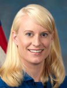

Lyndon B. Johnson Space Center
Houston, Texas 77058
|
National Aeronautics and Space Administration Lyndon B. Johnson Space Center Houston, Texas 77058 |
 |
Biographical Data |
||
Kathleen (Kate) Rubins (Ph.D.)
NASA Astronaut
PERSONAL DATA: Born in 1978 in Farmington, Connecticut, and raised in Napa, California, where her father, Jim, still resides. Her mother, Ann Hallisey resides in Davis, California. She enjoys running, cycling, swimming, flying, scuba diving and reading. Kate is married to Michael Magnani. Michael’s parents, Ellen and Gil, reside in Homewood, California.
EDUCATION: Graduated from Vintage High School in 1996, received a Bachelor of Science degree in Molecular Biology from the University of California, San Diego, in 1999 and a Ph.D. in Cancer Biology in 2005 from Stanford University Medical School Biochemistry Department and Microbiology and Immunology Department.
ORGANIZATIONS: American Association for the Advancement of Science (AAAS), American Society of Tropical Medicine and Hygiene (ASTMH), American Society for Virology (ASV), RNA Society, Chi Omega, American Institute of Aeronautics and Astronautics (AIAA)
SPECIAL HONORS: Popular Science’s Brilliant Ten (2009), National Science Foundation Predoctoral Fellowship (2000), Stanford Graduate Fellowship - Gabilan Fellow (2000), UCSD Emerging Leader of the Year (1998), Order of Omega Honor Society Scholarship Award (1998)
EXPERIENCE: Dr. Rubins conducted her undergraduate research on HIV-1 integration in the Infectious Diseases Laboratory at the Salk Institute for Biological Studies. She analyzed the mechanism of HIV integration, including several studies of HIV-1 Integrase inhibitors and genome-wide analyses of HIV integration patterns into host genomic DNA. She obtained her Ph.D. from Stanford University and, with the U.S. Army Medical Research Institute of Infectious Diseases and the Centers for Disease Control and Prevention, Dr. Rubins and colleagues developed the first model of smallpox infection. She also developed a complete map of the poxvirus transcriptome and studied virus-host interactions using both in-vitro and animal model systems.
Dr. Rubins then accepted a Fellow/Principal Investigator position at the Whitehead Institute for Biomedical Research (MIT/Cambridge, Massachusetts) and headed a lab of 14 researchers studying viral diseases that primarily affect Central and West Africa. She traveled to the Democratic Republic of Congo to conduct research and supervise study sites. Work in the Rubins Lab focused on poxviruses and host-pathogen interaction as well as viral mechanisms for regulating host cell mRNA transcription, translation and decay. In addition, she conducted research on transcriptome and genome sequencing of filoviruses (Ebola and Marburg) and Arenaviruses (Lassa Fever) and collaborative projects with the U.S. Army to develop therapies for Ebola and Lassa viruses. Dr. Rubins has published and presented her work in numerous papers at international scientific conferences and in scientific journals.
NASA EXPERIENCE: Rubins was selected in July 2009 as 1 of 14 members of the 20th NASA astronaut class. She recently graduated from Astronaut Candidate Training, which included scientific and technical briefings, intensive instruction in International Space Station (ISS) systems, Extravehicular Activity (EVA), robotics, physiological training, T-38 flight training and water and wilderness survival training.
OCTOBER 2011